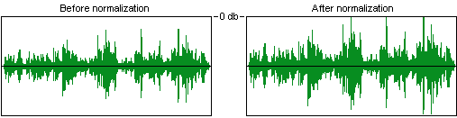

· Why do all my songs play at different volumes?
(Entry last updated on April 15th, 2003)They don't. All of your music is playing at the same volume.
Each album is produced differently, giving the illusion that two albums have different volumes, but the fact is that all CDs have the same upper volume limit, and pretty much every CD will hit that upper volume peak (or very close to it) on each and every track.
There are exceptions to this rule. Some tracks on some CDs may not be properly normalized, but these are extremely rare. For most music collectors, it's safe to say that the vast majority of the CDs in your collection will all hit exactly the same volume peaks on each and every track.
So if everything hits the same peak, why does one album sound louder than another?
Because of something called dynamic compression. It's a technique used in producing audio recordings. Different albums are produced with different amounts of dynamic compression. But before we can talk about compression, you need to understand normalization.
Normalization
Normalization is the process of increasing the volume of a digital audio track until its peak reaches very close to the upper limit of the audio format.
For the purposes of our discussion, this upper audio limit will be referred to as "zero decibels", notated as 0db. For those not familiar with digital audio concepts, this sounds a little backwards. In this scale, the top is zero and anything below the top is notated with a negative number.
To normalize an audio file, a piece of software scans the audio waveform, looking for the highest peak, then increases the volume of the entire file equally so that the highest peak falls very near 0db. Typically, a track will be normalized to 98 percent, meaning that the highest peak will fall 2 percent short of 0db. The 2 percent is left as "headroom", in case the playback equipment doesn't handle transient peaks well. Normalization looks like this:

Normalizing an audio file
Note that the audio file sounds exactly the same after it's been normalized, it's just "turned up" so that its overall volume is louder.
Your CD ripping software probably has a check box for normalization. It might even have some complicated "if/then" options for how to handle the normalization. I will repeat, to make myself perfectly clear:Your CDs were already normalized to begin with. Normalizing your audio files will probably not change anything. There are rare instances when you might run into a CD that is not normalized, and checking this little box in your ripping software might help those few CDs. But it will be very rare.
Differences in production
The reason that one album will tend to sound louder than another is because some recordings will hit this upper peak a lot more often than others. The seemingly-louder music is carefully produced and engineered to fill more space in the sonic spectrum. For example, an average pop song, compared to an average classical recording, looks like this:
Different recording styles
It's no wonder the pop song sounds louder than the classical one. Note that both tracks hit the same audio peaks, it's just that the pop recording hits those peaks quite a bit more often. Also, the quieter spaces between the peaks are still louder on the pop recording than on the classical recording.
Now here's an important concept: The pop song isn't just simply "turned up louder". If it were, then it would distort terribly and sound awful, because the peaks would exceed 0db and they would be clipped, causing digital noise. Instead, the pop song is engineered so that the difference between the loud parts and the quiet parts is not as great. This is done with...
Dynamic range compression
Before explaining dynamic compression, let's get one bit of semantics straight: The word "compression" can be used in two ways, and it's important you don't confuse the two terms. One use of the word refers to reducing the size of a computer file so that it takes up less storage. This is data compression. For example, .ZIP files and .MP3 files are data-compressed files. We're not talking about this kind of compression here. We're talking about dynamic compression.
Dynamic compression has been around for a very long time. It is used in almost all audio recordings. Its original purpose was to prevent clipping, so that the signal did not overload the recording tape medium. Compression is still used for this today, but now it is also used to make an instrument or a song sound louder overall without clipping.
A compressor simply reduces the difference between the loudest and the softest sounds in an audio signal. It tends to "smooth" out the signal, making it easier to work with in a recording environment. There are several different kinds of compressors and they each have different adjustable parameters such as ratio, attack time, release time, and gain.
Today, a given piece of music might have been produced with literally dozens of different compressors in the audio chain. For instance, take an electric guitar. Its raw signal goes into a rack of effects. Among the first effects in the chain will probably be a mild compressor. Then, the signal is piped through other effects (echo, distortion, etc.), and the resulting "wet" signal might go through another compressor to smooth out the sound even more. The resulting signal might go directly into the mixing board, or it might go through an amplifier, which will be recorded by a microphone. The microphone will probably be routed through another compressor before hitting the mixing board. The mixing equipment will probably include several compressors, and various tracks will be patched through the different compressors to produce different amounts of "smoothing". After the final mixdown is complete, the audio tracks will be sent to a mastering facility where the entire album is run through another compressor before being put onto CD.
Part of the art of mixing a piece of music is compressing it properly without ruining its punch. A detailed discussion of this art can be found here.
Because compression is such an art, you're going to hear different amounts of compression from album to album, even within the same genre or the same artist. In fact, the same album, when re-released as a remaster, might have a different amount of compression applied to it. Even the same song, when re-released on a Greatest Hits compilation, will probably have a different amount of compression applied to it.
By the way, this is the same reason a television commercial will sound louder than a television program. The commercials are compressed more.
|